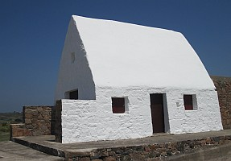

Lé 6 d'novembre, 1982.
Moussieu l'Rédacteu,
"Ch'est drôle comment qu' les gens ont eune fichue peux d'vaie lus filles mathier des soudards," Papa nouos disait eune séthée quand j'tions assis à l'entou d'l'âtre y'a beintôt quâsi nénante ans. "I' y'a pourtant ieu des mathiages dé même avaû l's années tch'ont touânné bein. Quand nou vait en Jèrri des gens tch'ont des noms Angliais comme Best, Metherell, Charlton, etc., v'là tchi veurt tout probabliément dithe qué des Jèrriaises avaient mathié des soudards. J'connaîssons tous La Caûminne à Mary Best dans Les Mielles. Y'a longtemps qué Mary Best n'est pus, mais sa caûminne nouos reste comme monûment d'un mathiage entre eune Jèrriaise et un soudard.
"J'ouïyais dans la forge à matîn qué la fille à Maît' Amice Gabouothé est engagie à Ph'lippe Ricard. Ché s'sa un bouân mathiage car y'a des sou des deux côtés et les deux fanmil'yes sont raide bouâns fèrmièrs, solides, Louothièrs, et n'sont pon ordgilleurs. I' pâlent à tout l'monde.
"La drôle dé chose est qué des mauvaises langues ont failli à mett' des bâtons dans les reues d'l'engagement viyant qu'eune vaîsînne avait chuchoté à la m'mèe à Judith Gabouothé qué sa fille hantait des soudards. I' s'adonne qué l'janne Ricard, tch'est Sèrgent dans la Milice, sortit auve Judith lé jour dé La Grand' R'veue et tch'i' n' avait pon leu l'temps dé s'dêchangi. Il' avaient don 'té veues ensembl'ye quand il avait acouo rouoge câsaque, et tchique badlagoule allit dithe à Missis Gabouothé qué sa fille avait 'té veue bras d'ssus bras d'sous auve un soudard.
"La m'mèe n'lé criyait pon, sans doute. Lé p'pèe avait toute confianche dans l'comport dé sa fille, et quand i' lî d'mandit si ch'tait vrai, ou ritonnit et n'lî dit pon oui ou non. Ou lî d'mandit seulement s'il en avait contre les soudards. I' lî reponnit qu' un vièr diton nouos dit qué ch'n'est pon l'habit tchi fait l'moine, et qué ch'n'est don pon la rouoge câsaque tchi fait l'soudard.
"Sans doute, san p'pèe aver pus d'respé pour les soudards qu'un tas d'monde. Il avait un oncl'ye, nommé Charles, décédé dépis eune dgiexaine d'années, tch'il avait hardi aimé et respecté dans san vivant. L'oncl'ye avait 'té soudard, naviguant, aventuthyi et viageux.
"Il avait siex pids quatre et avait 'té trompetteux dans l'Régiment des Grenadgièrs dé la Reine Victoria. Mais il avait ieu à tchitter la soudardéthie viyant qué s'n arme avait fait feu par la tchulasse quand il 'taient à tither au blianc. V'là tchi li'avait endommagi la veue gauche. I' s'mînt à navidgi, mais i' r'grettit toute sa vie d'n'aver pon ieu la chance dé rester soudard. Il en avait gardé un si bouân souv'nîn tch'il admithait autchun janne homme tchi s'engageait dans les rédgulièrs. Il avait gardé sa trompette, et l'Sieur Âmice Gabouothé en avait héthité. Auve le pâssage du temps, l'oncl'ye avait atchumulé des sou, et quand il 'tait à La Côte i' l's avait mîns dans eune banque là-bas. Malheutheusement, il avait mouothi subitement à l'êtrangi et pèrsonne né savait dans tchi banque. Il 'tait supposé aver fait san testament, mais pèrsonne n'en avait janmais veu rein.
"Mais pour èrvénîn à l'engagement d'Judith. Sa m'mèe n'avait pon rêussi à la faithe admettre qu'oulle avait hanté des soudards, et ou n'lé dêniet pon ni n'tout. V'là tch'ênèrvait la méthe dé pus en pus, viyant qu' la vaîsinne însistait qué ch'tait vrai car ou l's avait veues ensembl'ye dé ses propres ièrs, et qué ch'tait la rouoge câsaque tch'avait d'abord attithé s'n attention. Quant au p'pèe, quand sa femme li'en pâlait, i' lî disait 'Bah! Né t'gêne pon dé touos ches ouï-dithes dé bagouleuses comme nouot' vaîsinne. J'ai toute confianche dans l'bouân sens d'nouot' Judith. J'sai bein qué quand ou s'décid'da dé s'mathier ché s'sa à un bouân fèrmyi et travailleux comme san p'pèe.'
"Enfin, quand vînt l'vîngt-tch'-ieunième annivèrsaithe dé Judith, ses pathents lî donnîdrent un p'tit festîn, et san p'pèe lî dît qu' ou pouvait înviter autcheune pèrsonne dé san chouaix pour li'aidgi à célébrer l'occâsion. Oulle învitit la vaîsinne tch'avait la becque à banon et dît à Ph'lippe Ricard dé v'nîn dans ses habits d'soudard. Et pis ou fît san p'pèe dêhaler la vielle trompette à l'oncl'ye Charles.
"Quand Ph'lippe arrivit, drait comme un pitchet et dans ses habits d'soudard, Judith lus dît: 'J'm'en vais mathier un soudard, Ph'lippe, et i' s'en va sonner la trompette pour célébrer!'
"Quand Ph'lippe souffl'yit d'dans, un papi tchit d'la trompette. Ch'tait l'testament d'l'oncl'ye Charles disant qué sa p'tite forteune 'tait dans la Banque dé Montréal et tch'i' la donnait à sa p'tite-nièche Judith Gabouothé à condition qu' ou mathyîsse un soudard! Ch'est en tchi nou peut dithe qué né v'là un cas où'est qu'tout est bein tchi finnit bein!"
Viyiz étout: